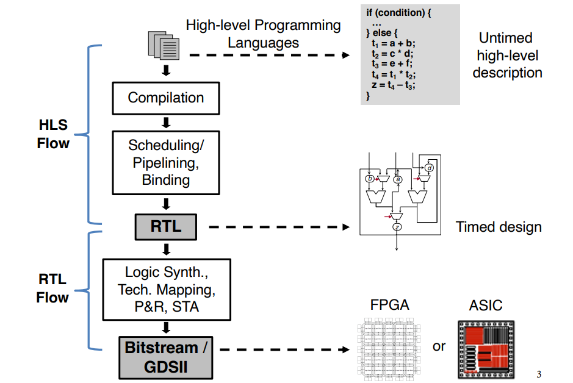
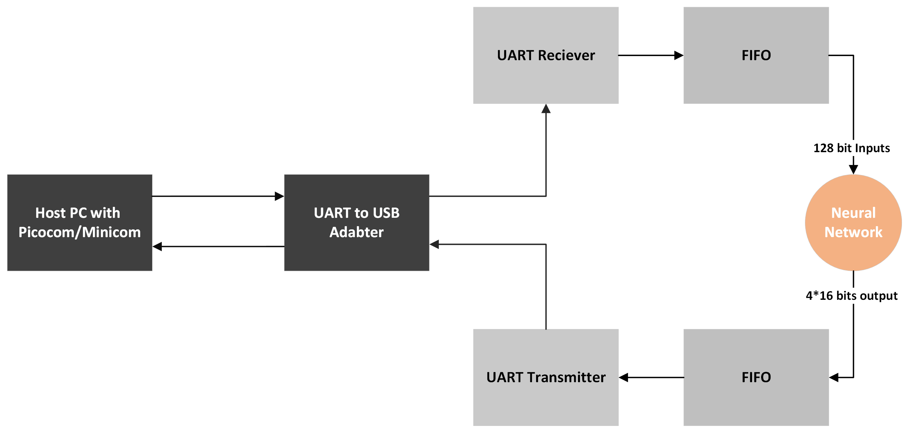
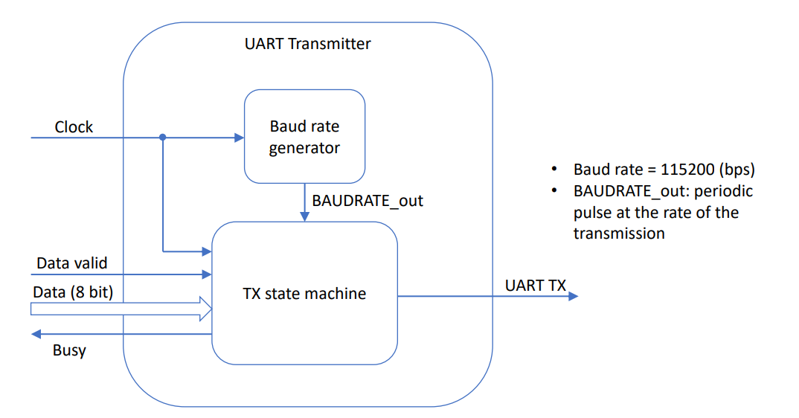
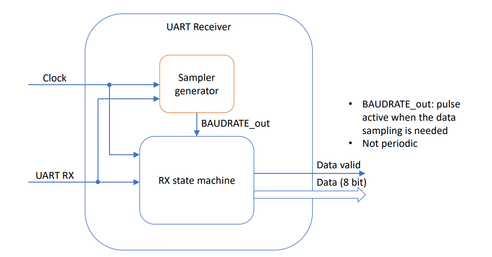
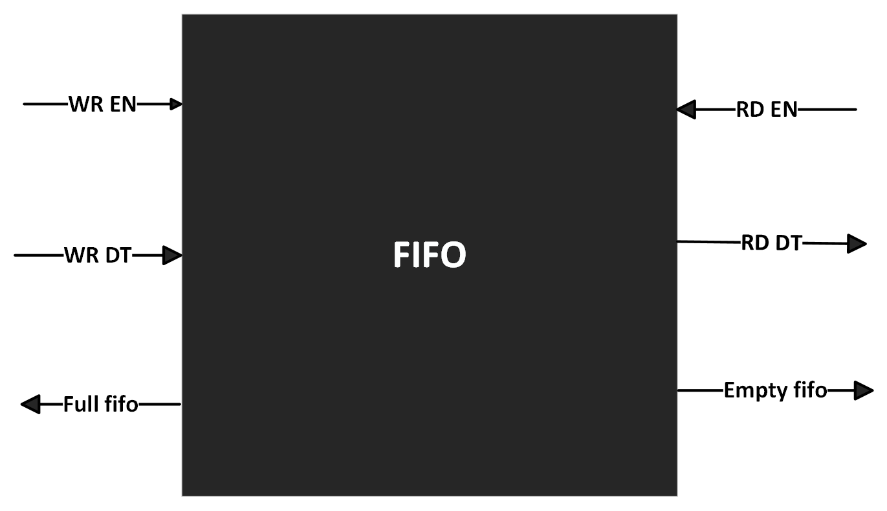

Neural Network Implementation in FPGA using HLS
Regarding the project, you can choose one of the two ways of implementing a neural network:
- You build the entire network in VHDL. In this case you have to make the function of the single node and then you have to instantiate every node of the network and route the signals that connect each node.
- You follow the programming flow of HLS4ML. In this case, you start from the network description in Python (the same description used for training), and following the HLS4ML flow, you first obtain the HLS description, and then, using Vivado HLS, you get an IP ready to be instantiated in a VHDL file.
In the first case, you have to write more code in VHDL. In the second case, you use a tool (HLS4ML). You can check the tutorial to understand if it is feasible or if it's better to tackle the first option.
Hardware Requirements
- Arty A7-100T Artix-7 FPGA Development Board - PN: XC7A100TCSG324-1
- A host computer running Windows or GNU/Linux
- A USB-A to USB-Micro cable to load the bitstream
Software Requirements
- Vivado® Design Suite 2020.1, download from here
- The Python environment used for the tutorials is specified in the environment.yml file. Setup with:
conda env create -f environment.yml conda activate neural-network-fpga
Neural Networks
Machine learning is a branch of artificial intelligence (AI) where algorithms and data are used to create a system that can perform a certain task. Training improves accuracy with more data. When accurate enough, the system is considered trained and can be deployed elsewhere for inference.
Neural networks, consisting of multiple compute layers, form the basis of most machine learning tasks. This whitepaper focuses on neural network inference on FPGA devices, illustrating their strengths and weaknesses.
FPGA Capabilities
Neural networks rely on multiply-accumulate calculations simulating neuron interactions. The flexibility of FPGAs allows the handling of various data types and widths, sometimes down to 8-bit integers or even a single bit.
Comparatively, ASICs, CPUs, GPUs, and FPGAs have distinct advantages. FPGAs can handle latency-critical real-time tasks better due to their configurability, making them ideal when an ASIC does not exist.
HLS - High Level Synthesis
- What is it? HLS is an automated design process converting an abstract digital system specification into a register-transfer level structure.
- Why use it? Productivity, portability, and higher quality from quick design exploration.
Typical C/C++ Constructs to RTL Mapping
| C/C++ Constructs | RTL Components |
|---|---|
| Functions | Modules |
| Arguments | Input/output ports |
| Operators | Functional units |
| Scalars | Wires or registers |
| Arrays | Memories |
| Control flows | Control logic |
A Typical HLS Flow

Scheduling
Introduces clock boundaries to untimed (or partially timed) input specifications.
Pipelining
A performance optimization in HLS, executing multiple loop iterations concurrently using the same hardware.
Binding
Maps operations, variables, and data transfers to available resources.
General Workflow to use HLS
- Problem definition
- Define inputs & outputs (HLS top-level function parameters)
- Code development
- Test C++ code
- Synthesis to VHDL, optimizing for performance within hardware limits
- Test synthesized design
- Export design, usually as Vivado IP format
- Implement in Vivado on actual FPGA
hls4ml

hls4ml is a Python package enabling machine learning inference in FPGAs by translating open-source machine learning models into HLS.
ap_ctrl_chain
The block-level handshake signals created by the ap_ctrl_chain control protocol for a sequential execution are illustrated below:
Flow of Project

UART Implementation
UART Transmitter

UART Receiver

FIFO - First Input First Output
FIFOs are essential components in FPGA and ASIC designs. They facilitate clock domain crossing, data buffering, and storage.

Some Expected Errors
If you encounter an issue with Jupyter Notebook while setting up the environment with hls4ml-tutorial, try:
pip install --upgrade notebook==6.4.12